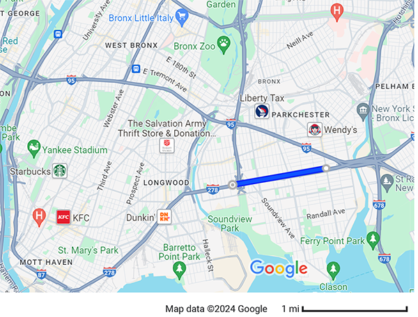
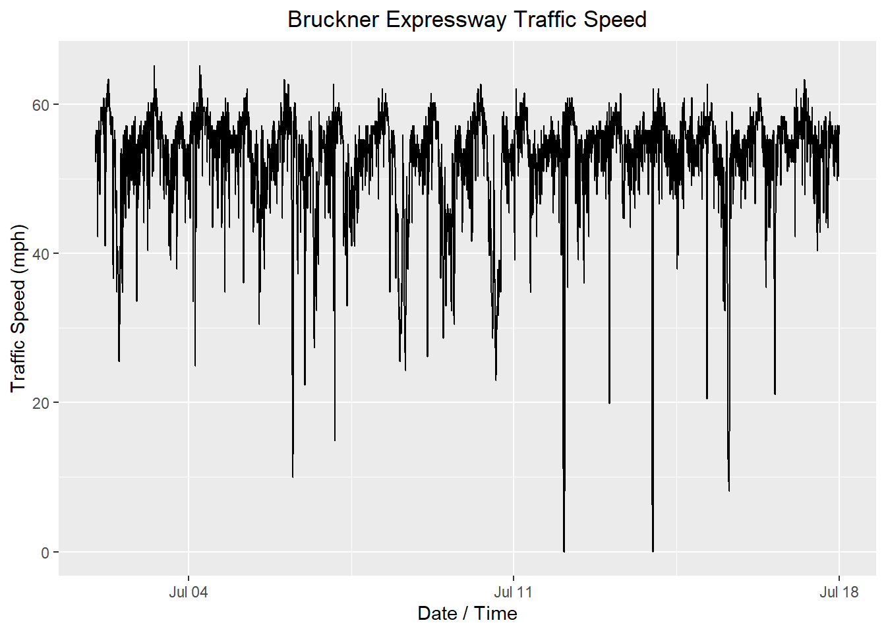
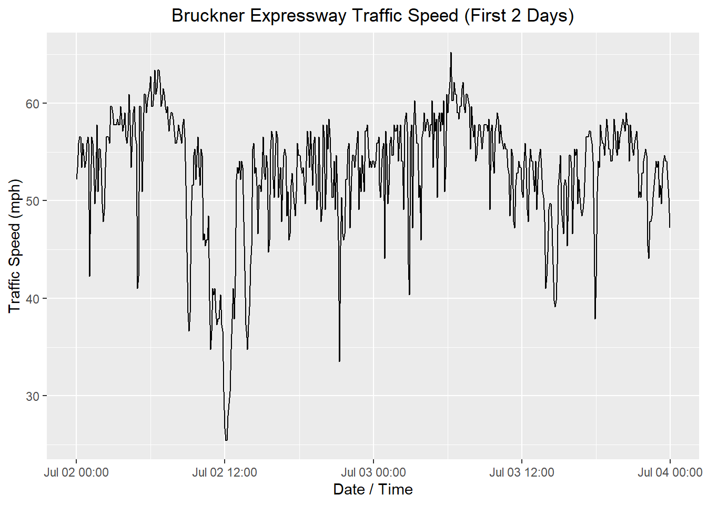
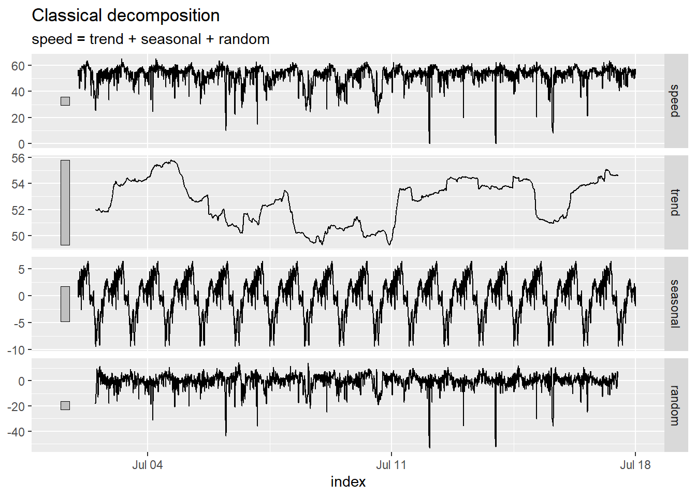
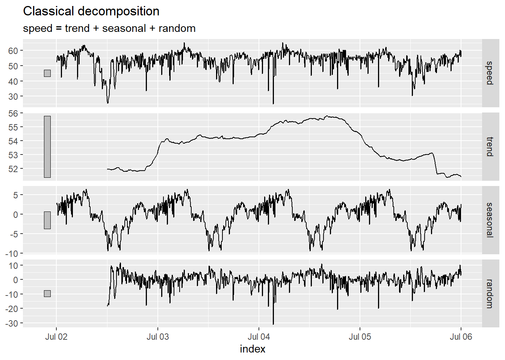
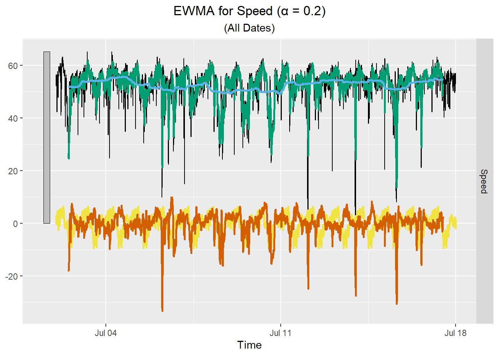
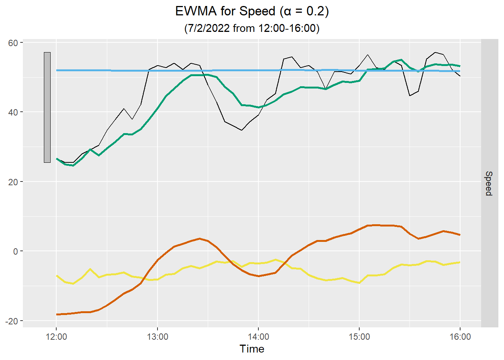

x <- c( 4.4, 4.2, 4.2, 4, 4.4, 4.7, 4.9, 5.3, 5.4, 5.5 )Exponential Smoothing (EWMA)
Chapter 3: Lesson 2
Learning Outcomes
Implement simple exponential smoothing to estimate local mean levels
- Explain forecasting by extrapolation
- State the assumptions of exponential smoothing
- Define exponential weighted moving average (EWMA)
- State the exponential smoothing forecasting equation
- State the EWMA in geometric series form (in terms of x_t only Eq 3.18)
- Explain the EWMA intuitively
- Define the one-step-ahead prediction error (1PE)
- State the SS1PE used to estimate the smoothing parameter of a EWMA
- Indicate when the EWMA smoothing parameter is optimally set as 1/n
Preparation
- Read Section 3.4.1
Learning Journal Exchange (10 min)
Review another student’s journal
What would you add to your learning journal after reading another student’s?
What would you recommend the other student add to their learning journal?
Sign the Learning Journal review sheet for your peer
Class Discussion: Theory Supporting the EWMA
Our objective is to predict a future value given the first \(n\) observations of a time series. One example would be to forecast sales of an existing product in a stable market.
We assume the following about the time series:
There is no systematic trend or seasonal effects (or that these have been removed).
The mean is non-stationary (can change), but we have no idea about the direction.
The idea is that we will use past observations to predict future observations. Our best prediction of future observations under this model is the mean of the estimate at the time of the last observation. In symbols, if we want to predict the value of the time series at time \(n+k\), we use our estimate of the time series at time \(n\):
\[ \hat x_{n+k \mid n} = a_n, ~~~~~~~~~~~~~~~~~~\text{where}~~ k = 1, 2, 3, \ldots ~~~~~~~~~~~~~~~~~~~~~~~~~~~~~~~~~~~~~~~~ (3.16) \]
Here are three equivalent expressions that define the EWMA estimation technique:
\[\begin{align} a_t &= \alpha x_t + (1-\alpha) a_{t-1} & (3.15) \\ a_t &= \alpha (x_t - a_{t-1} ) + a_{t-1} & (3.17) \\ a_t &= \alpha x_t + \alpha(1-\alpha) x_{t-1} + \alpha(1-\alpha)^2 x_{t-2} + \alpha(1-\alpha)^3 x_{t-3} + \cdots & (3.18) \end{align}\]We assume that \(a_1 = x_1\).
Class Activity: Practice Applying the EWMA (20 min)
We will use the following data to practice applying the Exponentially Weighted Moving Average (EWMA) technique. Use \(\alpha = 0.2\).
Start filling Table 1 by calculating the values of \(a_t\) for each value of \(x_t\).
| $$t$$ | $$x_t$$ | $$a_t$$ | $$e_t$$ |
|---|---|---|---|
| 1 | 4.4 | ||
| 2 | 4.2 | ||
| 3 | 4.2 | ||
| 4 | 4 | ||
| 5 | 4.4 | ||
| 6 | 4.7 | ||
| 7 | 4.9 | ||
| 8 | 5.3 | ||
| 9 | 5.4 | ||
| 10 | 5.5 |
One-Step-Ahead Prediction Errors
Definition
If we have a time series \(\{x_1, x_2, \ldots, x_n\}\) and start with \(a_1 = x_1\), we can compute the value of \(a_t\) if \(2 \le t \le n\). We define the one-step-ahead prediction error, \(e_t\) as
\[ e_t = x_t - \hat x_{t|t-1} = x_t - a_{t-1} \]
Calculation of \(\alpha\) in R
R uses the one-step-ahead prediction error to estimate \(\alpha\). It chooses \(\alpha\) to minimize
\[ SS1PE = \sum_{t=2}^n e_t^2 = e_2^2 + e_3^2 + e_4^2 + \cdots + e_n^2 \]
where \(a_1 = x_1\).
If the mean of a long time series has not changed much, then this will produce a value of \(\alpha\) that is unduly small. A small value of \(\alpha\) prevents the model from responding to rapid future changes in the time series.
Computation of the One-Step-Ahead Prediction Errors
Class Activity: Highway Speeds in New York City (15 min)
The Bruckner Expressway (I-278) cuts through the Bronx in New York City. Traffic sensors record the speed of cars every 5 minutes between Stratford Avenue and Castle Hill Avenue.
The data from 7/2/2022 through 7/17/2022 are contained in the file ny_speeds.csv. (Source: City of New York Department of Transportation. Online Links: http://a841‐dotweb01.nyc.gov/datafeeds.) These data have been cleaned to align the observations with five minute intervals.
We will read these data into a tsibble.

Show the code
# Read the ny_speeds data
ny_speeds_dat <- rio::import("https://byuistats.github.io/timeseries/data/ny_speeds.csv")
ny_speeds_tb <- ny_speeds_dat |>
mutate(
year = lubridate::year(date),
month = lubridate::month(date),
#
day = lubridate::day(date),
hour = lubridate::hour(date),
min = lubridate::minute(date)
) |>
rename(speed = Speed) |>
dplyr::select(date, year, month, day, hour, min, speed) |>
tibble()
ny_speeds_ts <- ny_speeds_tb |>
mutate(index = date) |>
as_tsibble(index = index)Here are the first few lines of the tsibble:
# A tsibble: 10 x 8 [5m] <UTC>
date year month day hour min speed index
<dttm> <dbl> <dbl> <int> <int> <int> <dbl> <dttm>
1 2022-07-02 00:00:00 2022 7 2 0 0 52.2 2022-07-02 00:00:00
2 2022-07-02 00:05:00 2022 7 2 0 5 53.4 2022-07-02 00:05:00
3 2022-07-02 00:10:00 2022 7 2 0 10 55.9 2022-07-02 00:10:00
4 2022-07-02 00:15:00 2022 7 2 0 15 56.5 2022-07-02 00:15:00
5 2022-07-02 00:20:00 2022 7 2 0 20 56.5 2022-07-02 00:20:00
6 2022-07-02 00:25:00 2022 7 2 0 25 53.4 2022-07-02 00:25:00
7 2022-07-02 00:30:00 2022 7 2 0 30 55.9 2022-07-02 00:30:00
8 2022-07-02 00:35:00 2022 7 2 0 35 54.7 2022-07-02 00:35:00
9 2022-07-02 00:40:00 2022 7 2 0 40 53.4 2022-07-02 00:40:00
10 2022-07-02 00:45:00 2022 7 2 0 45 54.0 2022-07-02 00:45:00Here is a time plot of the data:
Show the code
autoplot(ny_speeds_ts, .vars = speed) +
labs(
x = "Date / Time",
y = "Traffic Speed (mph)",
title = "Bruckner Expressway Traffic Speed"
) +
theme(plot.title = element_text(hjust = 0.5))

The data set spans 16 days. There is a strong daily pattern, which can be seen by the 16 pairs of peaks and valleys. It might be easier to see if we look at the observations from the first 2 days.

Next, we compute the decomposition. We expect that that traffic will fluctuate with daily seasonality. The number of five-minute periods in a day is:
\[ \underbrace{\frac{60}{5}}_{\substack{\text{Number of} \\ \text{5-minute periods} \\ \text{per hour}}} \cdot \underbrace{24}_{\substack{\text{Number of} \\ \text{hours} \\ \text{per day}}} = ~~ 288~~\text{five-minute periods per day} \]
That is, the time series will follow a cycle that repeats every 288 five-minute intervals. Due to the complexity of the time series, we will indicate this to R in our function call. (Try replacing “speed ~ season(288)” in the classical_decomposition command with “speed” and see what happens!)
ny_speeds_decompose <- ny_speeds_ts |>
model(feasts::classical_decomposition(speed ~ season(288),
type = "add")) |>
components()
autoplot(ny_speeds_decompose)

Here is a plot of the decomposition for the first 4 days of the time series (July 2, 2022 at 0:00 to July 6, 2022 at 0:00).
Show the code
ny_speeds_decompose |>
filter((index) <= mdy_hm("7/6/2022 0:00")) |>
autoplot()

Applying the EWMA when there is a trend and/or seasonal variation
One assumption for the EWMA is that there is no trend or seasonal variation. If present, we need to eliminate the trend and seasonal variation before applying the EWMA algorithm. In this case, we decompose the time series and compute the EWMA for the random component. Finally, we add the trend and seasonal components back in to get the EWMA estimate for the time series.
These data demonstrate distinct seasonal variation. We will need to apply the EWMA algorithm to the random component and later add the seasonal component and trend to our EWMA estimate.
We demonstrate the computation of the EWMA for a few choices of \(\alpha\).
Once we have obtained the EWMA for the random component, we can add to it the trend and seasonality to get the EWMA for the original speed data. The raw data are plotted in black, the trend in blue, the seasonal component in yellow, and the EWMA is plotted in orange. The green curve is the sum of EWMA, the seasonal component, and the trend.

Here is the plot for four hours of data:

Class Activity: EWMA in R (10 min)
We will compute the EWMA for the random component of the New York highway speed data in R. We have already decomposed the model, so we have isolated the estimated values for the random component. This is a portion of the tsibble ny_speeds_decompose:
| .model | index | speed | trend | seasonal | random | season_adjust |
|---|---|---|---|---|---|---|
| feasts::classical_decomposition(speed ~ season(288), type = "add") | 2022-07-02 | 52.19 | NA | 2.557 | NA | 49.633 |
| feasts::classical_decomposition(speed ~ season(288), type = "add") | 2022-07-02 00:05:00 | 53.43 | NA | 2.884 | NA | 50.546 |
| feasts::classical_decomposition(speed ~ season(288), type = "add") | 2022-07-02 00:10:00 | 55.92 | NA | 2.463 | NA | 53.457 |
| ⋮ | ⋮ | ⋮ | ⋮ | ⋮ | ⋮ | ⋮ |
| feasts::classical_decomposition(speed ~ season(288), type = "add") | 2022-07-02 11:55:00 | 30.44 | NA | -4.195 | NA | 34.635 |
| feasts::classical_decomposition(speed ~ season(288), type = "add") | 2022-07-02 12:00:00 | 26.71 | 51.969 | -7.002 | -18.258 | 33.712 |
| feasts::classical_decomposition(speed ~ season(288), type = "add") | 2022-07-02 12:05:00 | 25.47 | 51.973 | -8.906 | -17.597 | 34.376 |
| feasts::classical_decomposition(speed ~ season(288), type = "add") | 2022-07-02 12:10:00 | 25.47 | 51.969 | -9.405 | -17.095 | 34.875 |
| ⋮ | ⋮ | ⋮ | ⋮ | ⋮ | ⋮ | ⋮ |
| feasts::classical_decomposition(speed ~ season(288), type = "add") | 2022-07-17 11:45:00 | 53.43 | 54.612 | -4.153 | 2.971 | 57.583 |
| feasts::classical_decomposition(speed ~ season(288), type = "add") | 2022-07-17 11:50:00 | 54.05 | 54.616 | -4.485 | 3.918 | 58.535 |
| feasts::classical_decomposition(speed ~ season(288), type = "add") | 2022-07-17 11:55:00 | 53.43 | 54.626 | -4.195 | 2.999 | 57.625 |
| feasts::classical_decomposition(speed ~ season(288), type = "add") | 2022-07-17 12:00:00 | 50.33 | NA | -7.002 | NA | 57.332 |
| ⋮ | ⋮ | ⋮ | ⋮ | ⋮ | ⋮ | ⋮ |
| feasts::classical_decomposition(speed ~ season(288), type = "add") | 2022-07-17 23:45:00 | 55.3 | NA | -1.237 | NA | 56.537 |
| feasts::classical_decomposition(speed ~ season(288), type = "add") | 2022-07-17 23:50:00 | 55.92 | NA | -1.905 | NA | 57.825 |
| feasts::classical_decomposition(speed ~ season(288), type = "add") | 2022-07-17 23:55:00 | 57.16 | NA | 1.528 | NA | 55.632 |
Warning
When applying EWMA to the random component of the time series, delete the variable .model and all NA values from the data frame. If you neglect this step, there will be errors in the code below.
We drop the variable .model and omit all NA values. (Remember the first half-day and the last half-day in the time series do not yield estimates for the random component.)
ny_speeds_random <- ny_speeds_decompose |>
na.omit() |> # Omit all NA values
select(-.model) # Eliminate the variable .modelThe following code can be used to execute the EWMA algorithm on the random component using \(\alpha = 0.2\).
ny_speeds_model1 <- ny_speeds_random |>
model(Additive = ETS(random ~
trend("A", alpha = 0.2, beta = 0) +
error("A") + season("N"),
opt_crit = "amse", nmse = 1))
report(ny_speeds_model1)Series: random
Model: ETS(A,A,N)
Smoothing parameters:
alpha = 0.2
beta = 0
Initial states:
l[0] b[0]
-13.52924 0.003643793
sigma^2: 22.2348
AIC AICc BIC
49563.94 49563.94 49583.05 Now, we calculate the value of SS1PE.
sum(components(ny_speeds_model1)$remainder^2, na.rm = TRUE)[1] 95965.59Homework Preview (5 min)
- Review upcoming homework assignment
- Clarify questions